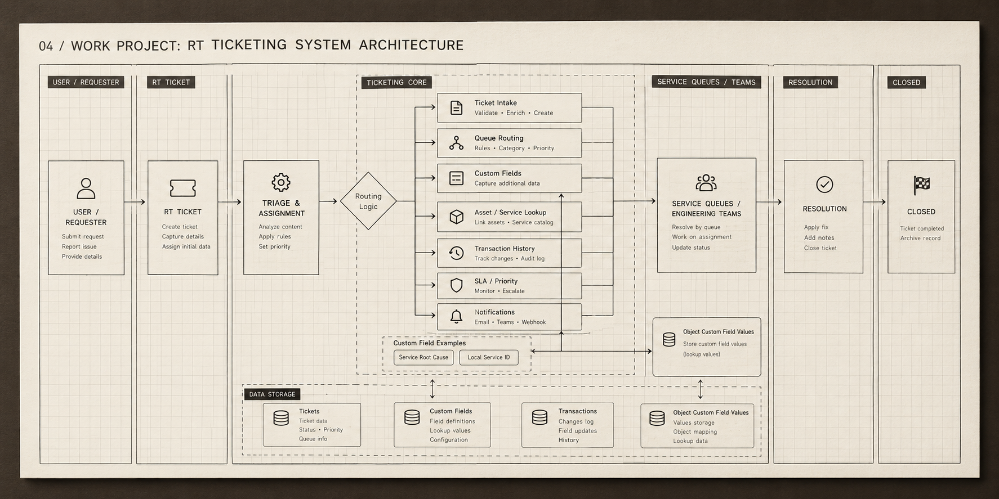

01
RT Ticketing System
Event-Driven, High Concurrency System
ROLE
Software Engineer
TECH
Go, MySQL, Redis, Docker, Apache Kafka

Delivered Network Operation Center (NOC) Ticket Automation End to End Workflow features including Automation Decision Workflow Engine, event streaming via Kafka to other integrated systems. Support and assist through the Development, SIT, QA, UAT and Production enviroments.